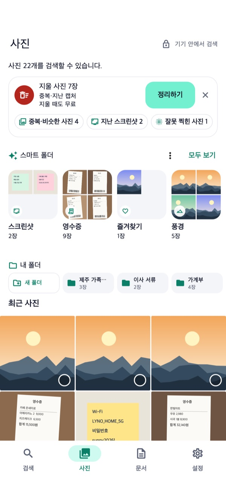

스마트 폴더 활용법
1. 스마트 폴더란?
LYNO Find가 사진을 알아서 분류해 폴더에 묶어 주는 기능입니다. 새로 찍은 사진도 맞는 폴더에 자동으로 들어갑니다.

2. 어떤 폴더가 있나요?
처음부터 켜져 있는 기본 폴더가 있고, 나머지는 원하는 것만 골라서 켤 수 있습니다.
- 골라서 켜는 묶음: 기본, 장소·여행, 글자가 있는 사진, 사람·동물, 행사, 취미·운동, 물건·음식, 풍경·자연(8개 묶음).
- 예: 스크린샷, 즐겨찾기, 1년 전 오늘, 밤 사진, 메신저로 받은 사진, 다운로드한 이미지, 영수증, 노을, 바다, 강아지, 고양이, 생일, 커피·컵 등.
3. 어떻게 쓰나요?
"사진" 탭에서 폴더를 열고, 켜고 끌 수 있습니다.
- 아래 "사진" 탭을 누르세요.
- 스마트 폴더에서 "모두 보기"를 누르면 폴더를 열 수 있습니다.
- 스마트 폴더 오른쪽 메뉴의 "폴더 고르기"에서 묶음을 펼쳐 원하는 폴더를 켜고 끌 수 있습니다.
- 묶음 맨 위의 "○○ 전체"를 켜면 그 묶음 사진을 폴더 하나에 모읍니다.
- 다 골랐으면 아래 "○개 폴더 만들기"를 누르세요.

4. 안심하세요
사진을 복사하거나 옮기지 않습니다. 원본은 그대로 두고, 폴더는 사진을 모아서 보여 주기만 해서 용량을 차지하지 않습니다. 모든 분류는 휴대폰 안에서만 합니다.